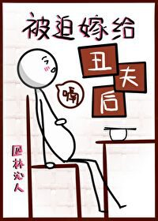

Un superior constante e inferior que ve a través de todo pero aún así lo adora, un experto en sistemas de curación y un sumiso deslumbrante, delicado y pseudo tierno.
El feo herrero de la aldea de Liuxi se casó con un hombre delicado y apuesto.
La mañana después de su boda, Qingyan, dolorida y débil, se aferró al hombre con debilidad. Con sus dedos suaves y perfumados, él acarició con delicadeza su rostro marcado por las cicatrices.
Qiu Henian se puso rígido por completo, esquivando mientras giraba la cara para apartarla.
“Primero debes lavarte la cara…”
Qingyan se recostó suavemente sobre él, su aliento fragante como orquídeas, "Quiero que mi esposo me lo limpie".
El pequeño esposo era tan puro y delicado, y Qiu Henian temía que lo maltrataran, casi con ganas de sujetarlo con el cinturón.
Hasta que un día, sintiendo la necesidad de volver a ver a su marido, cerró la puerta de su tienda temprano y se fue a casa.
Qiu Henian oyó que el pobre joven esposo, que no se atrevía a hablar en voz alta y temblaba al ver extraños, estaba discutiendo acaloradamente con los vecinos al otro lado de la cerca.
“¡Debes haber carecido de mucha virtud en tu vida pasada para casarte con un hombre tan inútil y feo!”
“¡Que le den a las tonterías de tu padre, tu hombre es un inútil! ¡Mi hombre lo hace siete veces por noche, soy tan jodidamente feliz!”
¡Estallido!
Qiu Henian tropezó y cayó, atravesando la puerta con fuerza.
Qingyan se giró para mirar, con la culpa reflejada en todo su rostro.
Qiu Henian se acercó, cargó a su marido y volvió a entrar en la casa.
Qingyan estaba inquieta, "¿Qué estás haciendo?"
Qiu Henian respondió: "Volver adentro para hacerlo siete veces por noche, pero es demasiado tarde y no hay tiempo suficiente".
Qingyan: "..."